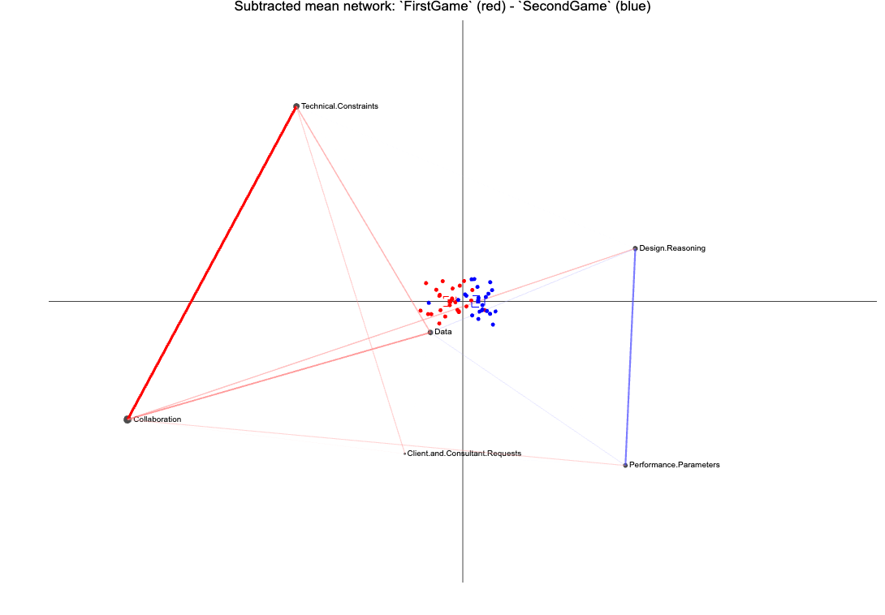

Unit 4 Case Study: An ENA of Virtual Internship Conversations
ECI 588: Text Mining in Education
Author
Dr. Joey Huang
Published
March 22, 2026
0. INTRODUCTION
This case study extends the methodology presented in the Learning Analytics in STEM Education Research (LASER) Institute by demonstrating the application of Epistemic Network Analysis (ENA) to explore collaborative learning processes in digital STEM education environments. ENA is a sophisticated technique that visualizes and quantifies connections among concepts in coded data, offering rich insights into how learners construct knowledge collaboratively.
Epistemic Network Analysis, developed by David Williamson Shaffer and colleagues, enables researchers to analyze discourse and interactions within learning communities, revealing the patterns of connections among key elements of the learning process. The method is particularly valuable in STEM education research, where understanding complex interactions is critical for improving learning outcomes and pedagogical practices.
Case Study Focus
This case study is adapted from a chapter by Tan et al. Tan et al. (2024) in the excellent book, Learning Analytics Methods and Tutorials. Our focus will be on applying ENA to investigate discourse patterns in a collaborative digital STEM learning environment. Specifically, we will examine how participants engage in problem-solving activities, make connections between STEM concepts, and collaboratively construct knowledge.By using ENA, researchers can systematically map the epistemic frames that occur when learners collaboratively tackle STEM-related problems, providing a quantitative yet qualitative-rich understanding of group learning dynamics. This analysis is particularly critical for understanding the nuances of learner interactions in digital environments, which often involve complex dialogues and exchanges that traditional qualitative methods might miss or oversimplify.
Our ENA case study covers the following concepts and skills:
Prepare. In the Prepare phase, we familiarize ourselves with the context of our case study, which leverages data from virtual internships aimed at enhancing engineering design thinking. We define specific research questions guided by prior studies and set up our analytical environment by loading essential R packages needed for our analyses, including {tidyverse}, {tidytext}, and {rENA}.
Wragle. In the Wrangle phase, we carefully import, organize, and prepare our data for analysis. This involves importing text-based discourse data from the RescuShell internship, specifying critical parameters for the ENA model (such as units of analysis, qualitative coding schemes, conversational boundaries, window size for capturing interactions, and group definitions), and finally constructing an ENA model object that captures our data’s structure and interaction patterns.
Explore. In the Explore phase, we use both visual and numeric methods to deeply investigate and interpret our ENA model. We create visual summaries of key model outputs, plotting mean networks and identifying meaningful differences across groups. We also provide numeric summaries of connection counts, normalized line weights, and ENA points to further understand underlying quantitative patterns that shape our visualizations.
Model In the Model phase, we conduct rigorous statistical analyses to validate and interpret the patterns observed in the visual and numeric explorations. We perform comparative statistical tests (such as t-tests and Mann-Whitney U tests) to evaluate differences in epistemic network structures between novice and expert learner conditions. Additionally, we evaluate model quality through variance explained, goodness-of-fit statistics, and interpretive validation (closing the interpretative loop) to ensure robust and meaningful results.
Communication. Finally, in the Communicate phase, we synthesize and clearly articulate our key findings, selecting the most meaningful insights to share with broader audiences. We focus on translating complex analyses into actionable insights through polished data visualizations and narrative explanations that align closely with our original research questions.
1. PREPARE
To help us better understand the context, questions, and data sources we’ll be using in Unit 3, this section will focus on the following topics:
Context. As context for our analysis this week, we’ll review an article by Arastoopour et al. Arastoopour Irgens et al. (2015) that uses ENA to explore virtual internships as one method for teaching engineering design thinking.
Questions. We’ll also examine what insight topic modeling can provide to a question that we asked participants to answer in their professional learning teams (PLTs).
Project Setup. This should be very familiar by now, but we’ll also learn about load the required packages for the topic modeling case study.
1a. Context
Arastoopour Irgens, G., Shaffer, D. W., Swiecki, Z., Ruis, A. R., & Chesler, N. C. (2015). [Teaching and assessing engineering design thinking with virtual internships and epistemic network analysis.](https://open.clemson.edu/cgi/viewcontent.cgi?article=1004&context=ed_human_dvlpmnt_pub) International Journal of Engineering Education.
Abstract
An engineering workforce of sufficient size and quality is essential for addressing significant global challenges such as climate change, world hunger, and energy demand. Future generations of engineers will need to identify challenging issues and design innovative solutions. To prepare young people to solve big and increasingly global problems, researchers and educators need to understand how we can best educate young people to use engineering design thinking. In this paper, we explore virtual internships, online simulations of 21st-century engineering design practice, as one method for teaching engineering design thinking. To assess the engineering design thinking, we use epistemic network analysis (ENA), a tool for measuring complex thinking as it develops over time based on discourse analysis. The combination of virtual internships and ENA provides opportunities for students to engage in authentic engineering design, potentially receive concurrent feedback on their engineering design thinking, and develop the identity, values, and ways of thinking of professional engineers.
Data Source & Analysis
Interaction data were collected from RescuShell, an engineering virtual internship platform. This digital platform provides a realistic engineering context where learners collaborate in solving authentic problems, simulating tasks common to engineering practice. The data used in this case study were previously examined by Shaffer & Arastoopour (2014), Arastoopour et al. (2016), and Chesler et al. (2015). The data consist primarily of text-based interactions recorded in discussion forums, chat logs, and collaborative workspaces within RescuShell.
For further details regarding data collection and analysis of these data sources, see also the following papers:
Shaffer, D. W., & Arastoopour, G. (2014). Epistemic network analysis of engineering virtual internships. Journal of Engineering Education, 103(4), 625-651.
Arastoopour, G., Shaffer, D. W., Chesler, N. C., & Linderoth, J. (2016). Epistemic network analysis as a measure of critical thinking in engineering education. International Journal of Engineering Education, 32(6), 2476-2486.
Chesler, N. C., Arastoopour, G., D’Angelo, C. M., Bagley, E. A., & Shaffer, D. W. (2015). Design of professional practice simulator for educating and motivating first-year engineering students. Advances in Engineering Education, 4(2), 1-27.
Summary of Key Findings
The following highlights key findings related to the discourse and interactions in engineering virtual internships:
ENA effectively identified distinct discourse patterns among learners participating in engineering virtual internships, highlighting how knowledge was co-constructed and shared within these collaborative spaces.
Analysis demonstrated how learners’ epistemic networks evolved significantly as they engaged in iterative problem-solving activities, with certain key concepts becoming increasingly central as students collaboratively advanced through the internship challenges.
Results indicated that the discourse patterns identified by ENA corresponded to deeper cognitive engagement, where students actively negotiated and co-constructed engineering knowledge rather than merely exchanging surface-level information.
Findings from prior analyses underscore the utility of ENA in capturing nuanced learner interactions and in differentiating between various collaborative learning approaches, suggesting its broader applicability in other STEM education research contexts.
1b. Guiding Questions
For this case study, we are interested in unpacking how participants involved in engineering virtual internships, such as those provided through the RescuShell platform, collaboratively engage in epistemic interactions that shape their learning experiences. Our specific research questions for this case study are:
What are the patterns of epistemic connections formed by learners as they collaboratively engage in engineering problem-solving tasks within digital internship environments?
Is there a difference in learners’ epistemic frames based on the condition to which they were assigned?
Previous studies on ENA within engineering education have identified critical epistemic connections associated with deep learning processes. One of the central questions researchers aimed to address was:
How do epistemic networks evolve throughout the collaborative problem-solving activities?
For this case study, we will further examine this question through the use of ENA.
Moreover, echoing a central question identified by Silge and Robinson (2018) as critical to text mining and natural language processing, this case study will continuously explore:
How do we quantify what a document or collection of documents is about?
1c. Load Libraries
As highlighted in Chapter 6 of Data Science in Education Using R (DSIEUR), packages are shareable collections of R code that contain functions, data, and documentation. Sometimes referred to as libraries, these packages:
increase the functionality of R by providing access to additional functions to suit a variety of needs. While it is entirely possible to do your work in R without packages, it’s not recommend. There are a wealth of packages available that reduce the learning curve the time spent on analytical projects.
Run the code chunk below to load {tidyvers} and {tidytext} packages that were introduced in previous units:
library(readr)library(dplyr)
Attaching package: 'dplyr'
The following objects are masked from 'package:stats':
filter, lag
The following objects are masked from 'package:base':
intersect, setdiff, setequal, union
library(tidytext)library(ggplot2)library(tm)
Loading required package: NLP
Attaching package: 'NLP'
The following object is masked from 'package:ggplot2':
annotate
library(topicmodels)library(stm)
stm v1.3.8 successfully loaded. See ?stm for help.
Papers, resources, and other materials at structuraltopicmodel.com
Registered S3 method overwritten by 'rENA':
method from
as.matrix.ena.matrix tma
For the latest features and updates, install from https://cran.qe-libs.org
Attaching package: 'rENA'
The following object is masked from 'package:purrr':
accumulate
The following object is masked from 'package:stats':
optimize
The following object is masked from 'package:methods':
show
The following object is masked from 'package:base':
units
The rENA Package 📦
The {rENA} package provides a comprehensive set of tools specifically designed for conducting Epistemic Network Analysis. It enables users to create visual representations and statistical models of the connections between coded data elements, particularly useful in educational and collaborative learning contexts. Key functions in the {rENA} package facilitate data preparation, network modeling, and interactive visualization, making it a valuable resource for researchers aiming to explore complex discourse and interaction patterns.
👉 Your Turn ⤵
Use the code chunk below to load the {rENA} package:
# YOUR CODE HERE
2. WRANGLE
As noted previously, data wrangling involves some combination of cleaning, reshaping, transforming, and merging data (Wickham, Çetinkaya-Rundel, and Grolemund 2023). In Section 2, we prepare our dataset for Epistemic Network Analysis (ENA). This process, commonly referred to as data wrangling, involves importing, cleaning, and organizing the data, as well as specifying key parameters required to construct our ENA model. Specifically, we’ll focus on the following key steps:
Import RescuShell Data. We begin by importing our dataset from RescuShell, an online simulation where students collaboratively address engineering design problems. We’ll inspect and understand the structure of our imported data, including qualitative codes assigned to the text data from online chats.
Specify ENA Model Parameters. Next, we outline and set critical parameters needed for the ENA model. This includes specifying our units of analysis, qualitative codes representing conceptual nodes, conversational boundaries, window size to capture interactions, group comparisons, and relevant metadata.
Construct an ENA Model. Finally, we use the prepared parameters to accumulate the data and create a structured ENA model object, laying the foundation for visual and numerical exploration of networked discourse patterns in Section 3.
2a. Import RescuShell Data
To get started, we need to import, or “read”, our data into R. The function used to import your data will depend on the file format of the data you are trying to import. First, however, check your Files tab in RStudio to verify that there is indeed file named rescushell-data.csv in your data folder.
Our data file consists of discourse from RescuShell, an online learning simulation where students work as interns at a fictitious company to solve a realistic engineering design problem in a simulated work environment. Throughout the internship, students communicate with their project teams and mentors via online chat, and these chats are recorded in the text column. A set of qualitative codes were applied to the data in the “text” column, where a value of 0 indicates the absence of the code and a value of 1 indicates the presence of the code in a given line.
Further details about the RS.data dataset can be found in Shaffer & Arastoopour D. Shaffer and Arastoopour (2014). Analyses of data from RescuShell and other engineering virtual internships can be found in Arastoopour et al. Arastoopour Irgens et al. (2015) and Chesler et al. Chesler et al. (2015).
Now let’s read our data into our Environment using the read_csv() function and assign it to a variable named rescushell_data so we can work with it like any other object in R.
Warning: One or more parsing issues, call `problems()` on your data frame for details,
e.g.:
dat <- vroom(...)
problems(dat)
Rows: 3824 Columns: 21
── Column specification ────────────────────────────────────────────────────────
Delimiter: ","
chr (9): UserName, Condition, C.Level.Pre, NewC.Change, C.Change, Timestamp...
dbl (12): ...1, CONFIDENCE.Pre, CONFIDENCE.Post, CONFIDENCE.Change, Activity...
ℹ Use `spec()` to retrieve the full column specification for this data.
ℹ Specify the column types or set `show_col_types = FALSE` to quiet this message.
👉 Your Turn ⤵
Use the code chunk below to inspect the data frame you just imported using a function of your choosing and answer the questions that follow:
# YOUR CODE HERE
In this case study, we are exploring the use of Epistemic Network Analysis (ENA) to analyze collaborative discussions within the RescuShell virtual internship platform. One critical step in preparing data for analysis is creating a codebook, which serves as a reference document that defines each variable in a dataset, including its meaning, format, and potential values.
In the table below, a short description is provided for each variable based on the dataset provided. The first one has been completed for you:
Variable Name
Short Description
UserName
Unique identifier (username) for each participant.
Condition
CONFIDENCE.Pre
CONFIDENCE.Post
CONFIDENCE.Change
C.Level.Pre
NewC.Change
C.Change
Timestamp
ActivityNumber
GroupName
GameHalf
GameDay
text
Data
Technical.Constraints
Performance.Parameters
Client.and.Consultant.Requests
Design.Reasoning
Collaboration
2b. Specify ENA Model Parameters
To prepare data for ENA model, there is a function called ena() which enables researchers to set the parameters for their model. This function wraps two other functions—ena.accumulate.data() and ena.make.set()—which can be used together to achieve the same result.
The following sections demonstrate how to set each parameter and explain how different choices affect the resulting ENA model.
Specify Units
In ENA, units can be individuals, ideas, organizations, or any other entity whose structure of connections you want to model. To set the units parameter, specify which column(s) in the data contain the variables that identify unique units.
For this example, we’ll use the Condition column and the UserName column to define the units.
Important
Learner Conditions. The Condition column has two unique values: FirstGame, and SecondGame, representing novice users and relative expert users, respectively, as some students participated in RescuShell after having already completed a different engineering virtual internship.
The UserName column includes unique user names for all students (n=48). This way of defining the units means that ENA will construct a network for each student in each condition.
unitCols <-c("Condition", "UserName")
To verify that the units are correctly specified, lets subset and preview the unique values in the units columns. To do that, we’ll pipe |> the data frame rescushell_data, select only the columns whose names are stored in the character vector unitCols using all_of(), which ensures those names are treated literally and throws an error if any are missing, and then use the distinct() function to drop any duplicate rows across those selected columns.
# A tibble: 48 × 2
Condition UserName
<chr> <chr>
1 FirstGame steven z
2 FirstGame akash v
3 FirstGame alexander b
4 FirstGame brandon l
5 FirstGame christian x
6 FirstGame jordan l
7 FirstGame arden f
8 FirstGame margaret n
9 FirstGame connor f
10 FirstGame jimmy i
# ℹ 38 more rows
There should 48 units from two conditions, which means that the ENA model will produce 48 individual-level networks for each of the units, and each unit is uniquely associated with either the novice group (FirstGame) or the relative expert group (SecondGame).
Specify Codes
Next, let’s specify the columns that contain the codes. Codes are ressearcher defined concepts whose pattern of association we want to model for each “unit.”
ENA represent codes as nodes in the networks and co-occurrences of codes as edges. Most researchers use binary coding in ENA analyses, where the values in the code columns are either 0 (indicating that the code is not present in that line) or 1 (indicating that the code is present in that line). rescushell_data contains six code columns, all of which will be used here.
To specify the code columns, enter the code column names in a vector.
Use the code chunk below to verify that the codes are correctly specified, by using the select() and all_of() functions again.
#YOUR CODE HERE
Your code should return a tibble containing only the six columns you listed in codeCols vector (in exactly that order) and all 3,824 rows from rescushell_data. In other words, you’ll see a preview of the data frame with just the columns:
Data
Technical.Constraints
Performance.Parameters
Client.and.Consultant.Requests
Design.Reasoning
Collaboration.
Important
Note: If every name in codeCols matches a column in rescushell_data, you’ll get a normal tibble output; if any name is misspelled or doesn’t exist, select(all_of()) will throw an error, alerting you to fix the typo before proceeding.
Specify Conversations
The conversation parameter determines which lines in the data can be connected. Codes in lines that are not in the same conversation cannot be connected. For example, you may want to model connections within different time segments, such as days, or different steps in a process, such as activities.
For this case study, we’ll choose the Condition, GroupName, and ActivityNumber columns to define the “conversations.” These choices indicate that connections can only happen between students who were in the same condition (FirstGame or SecondGame) and on the same project team (group), and within the same activity. This definition of conversation reflects what actually happened in the simulation: in a given condition, students only interacted with those who were in the same group, and each activity occurred on a different day.
👉 Your Turn ⤵
Similar to how we specified units and codes above, use the code chunk below to create a character vector that specifies the conversation parameter using the Condition, GroupName, and ActivityNumber columns, and then verify that the conversations are correctly specified by subset and preview the unique values in the conversation columns.
# YOUR CODE HERE
Again, your code should return a tibble containing only the thre columns you listed in conversationCols vector (in exactly that order) and all 3,824 rows from rescushell_data.
Specify the Window
Once the conversation parameter is specified, a window method needs to be specified. Whereas the conversation parameter specifies which lines can be related, the window parameter determines which lines within the same conversation are related. The most common window method used in ENA is called a moving stanza window, which is what will be used here.
Briefly, a moving stanza window is a sliding window of fixed length that moves through a conversation to detect and accumulate code co-occurrences in recent temporal context. The lines within a designated stanza window are considered related to each other. For instance, if the moving stanza window is 7, then each line in the conversation is linked to the six preceding lines.
Here, set the window.size.back parameter equal to 7. User can specify a different moving stanza window size by passing a different numerical value to the window.size.back parameter.
window.size.back =7
The ENA package also enables use of an infinite stanza window, which assumes that lines in any part of a conversation are related. The infinite stanza window works the same way as a moving stanza window, but there is no limit on the number of previous lines that are included in the window besides the conversation itself.
The infinite stanza window is less commonly used in ENA, but is specified as follows:
window.size.back ="INF"
Specify Groups and Rotation method
When specifying the units, we chose a column that indicates two conditions: FirstGame (novice group) and SecondGame (relative expert group).
To enable comparison of students in these two conditions, three additional parameters need to be specified: groupVar, groups, and mean like so:
groupVar <-"Condition"# "Condition" is the column used as our grouping variable groups <-c("FirstGame", "SecondGame") # "FirstGame" and "SecondGame" are the two unique values of the "Condition" columnmean =TRUE
These three parameters indicate that when building the ENA model, the first dimension will maximize the difference between the two conditions: FirstGame and SecondGame. This difference maximization is achieved through mean = TRUE, which specifies that a means rotation will be performed at the dimensional reduction stage. If the means rotation is set to FALSE or there aren’t two distinct groups in your data, ENA will by default use singular value decomposition (SVD) to perform the dimensional reduction.
Specify Metadata
Finally, the last parameter to be specified is metadata. Metadata columns are not required to construct an ENA model, but they provide information that can be used to subset units in the resulting model.
Run the code chunk below to specify the metadata columns to include data on student outcomes related to reported self-confidence before and after participating in engineering virtual internships.
We will use this data later to demonstrate a simple linear regression analysis that can be done using ENA outputs as predictors.
2c. Construct an ENA Model
Now that all the essential parameters have been specified, the ENA model can be constructed.
To build an ENA model, we need two functions ena.accumulate.data and ena.make.set, and we recommend that you store the output in an object (in this case, set.ena).
accum.ena <-ena.accumulate.data(text_data = rescushell_data[, 'text'],units = rescushell_data[,unitCols],conversation = rescushell_data[,conversationCols],metadata = rescushell_data[,metaCols], # optionalcodes = rescushell_data[,codeCols],window.size.back =7)set.ena =ena.make.set(enadata = accum.ena, # the accumulation run aboverotation.by = ena.rotate.by.mean, # equivalent of mean=TRUE in the ena functionrotation.params =list( accum.ena$meta.data$Condition=="FirstGame", # equivalent of groups in the ena function accum.ena$meta.data$Condition=="SecondGame"# equivalent of groups in the ena function ))
This combined visual and numeric approach enables a comprehensive understanding of discourse patterns within our ENA framework.
Now that we have constructed an ENA Model object, we can begin to descriptively explore through visual and numerical summaries the data stored in the set.ena model.
First, let’s use the names() function to first determine what types of items and data are stored in the set.ena model:
Now let’s explore some of these items that are of most interest!
3. EXPLORE
In Section 3, we delve into descriptive exploration of our ENA model, visually and numerically summarizing the interactions in our data set. Specifically, we’ll investigate two primary methods for understanding and interpreting ENA model outputs:
Visual Summaries. We start by using visualization functions from the {rENA} package to illustrate networks of connections. We’ll plot mean networks for different participant conditions, visualize subtracted networks to pinpoint differences between groups, and interpret how the strengths and patterns of connections differ visually across conditions.
Numerical Summaries. Next, we shift from visualizations to numerical summaries, examining key quantitative aspects of the ENA outputs. We’ll explore summary statistics like connection counts, normalized line weights (relative connection frequencies), and ENA points representing individual or group epistemic network positions, allowing us to understand the underlying numeric properties that drive the visualizations.
3a. Visual Summary of Key Model Outputs
Once an ENA set is constructed, it can be visualized as a network graph, which helps to facilitates interpretation of the model. Here, we will look at the two conditions, FirstGame (novices) and SecondGame (relative experts), by plotting their mean networks.
Plot a Mean Network
To plot a network, use the ena.plot.network function. This function requires the networkparameter (a character vector of line weights), and the line weights come from set$line.weights.
First, run the following code to subset line weights for each of the two groups:
# Subset lineweights for `FirstGame`first.game.lineweights <-as.matrix(set.ena$line.weights$Condition$FirstGame)# Subset lineweights for `SecondGame`second.game.lineweights <-as.matrix(set.ena$line.weights$Condition$SecondGame)
These two‑lines of code out the “line weight” adjacency matrices for each game condition from your ENA results and ensures they’re stored as plain numeric matrices:
set.ena$line.weights is a nested list generated by the ena.make.set() that contains connection‑strength data between codes in our data.
$Condition$FirstGame (and similarly $Condition$SecondGame) selects the sub‑element corresponding to that experimental condition.
Wrapping it in as.matrix() converts whatever internal class ENA uses into a standard numeric matrix for graphing.
Each resulting matrix has our qualitative codes as both row and column names, and each cell value represents the strength (weight) of the co‑occurrence (i.e., the “line weight”) between that pair of codes for the given condition. You can now easily inspect dimensions (dim()), view row/column names (rownames(), colnames()), or feed these matrices into plotting or further network analyses.
Next, run the following code to calculate the mean networks for the two groups, and store the line weights as vectors:
These two lines compute each code’s average connection strength (i.e. the mean of its column in the line‑weight matrix) for each condition and store the results as plain numeric vectors:
colMeans(first.game.lineweights) calculates the mean of every column in the first.game.lineweights matrix, producing a named numeric vector where each element is that code’s average co‑occurrence weight.
Wrapping it in as.vector() strips off the names, leaving just a simple numeric vector, which is then assigned to first.game.mean.
The second line does exactly the same thing for second.game.lineweights, yielding second.game.mean. Each element in these vectors tells you how strongly, on average, a given code connects to all other codes in FirstGame versus SecondGame.
Finally, we can now produces an ENA network visualization showing each code’s average connection strength for the FirstGame condition, by
Using the ena.plot(set.ena) to initializes a default ENA network plot from our set.ena object.
Using the |> pipe operator to send the output to the ena.plot.network(network = first.game.mean, colors = c("red")) which will pipe the base plot into ena.plot.network(), which overlays a network whose edge (and node) thickness reflects the values in your numeric vector first.game.mean
To distinguish the two mean networks, let’s set the color of the FirstGame mean network to red.
ena.plot(set.ena, title ="FirstGame mean plot") |>ena.plot.network(network = first.game.mean, colors =c("red"))
The final output is a single network graph in which each code’s mean co‑occurrence strength (from FirstGame) is visually encoded by line thickness (and node size), with red lines indicating the magnitude of those average connections.
👉 Your Turn ⤵
Create an epistemic network for the SecondGame and set the color of of the network lines to blue.
# YOUR CODE HERE
As you can see from the two network visualizations above, their node positions are exactly same. All ENA networks from the same model have the same node positions, which are determined by an optimization routine that attempts to place the nodes such that the centroid of each unit’s network and the location of the ENA point in the reduced space are co-located.
Because of the fixed node positions, ENA can construct a subtracted network, which enables the identification of the most salient differences between two networks. To do this, ENA subtracts the weight of each connection in one network from the corresponding weighted connection in another network, then visualizes the differences in connection strengths. Each edge is color-coded to indicate which of the two networks contains the stronger connection, and the thickness and saturation of the edges corresponds to the magnitude of the difference.
Now let’s plot a subtracted network, which combines the two graphs and helps to highlight where they differ.
First we need to calculate the subtracted network line weights by subtracting one group’s line weights from the other. (Because ENA computes the absolute values of the differences in edge weights, the order of the two networks in the subtraction doesn’t matter.)
Then we’ll use the ena.plot function again to plot the subtracted network. If the differences are relatively small, a multiplier can be applied to rescale the line weights, improving legibility.
ena.plot(set.ena, title ="Subtracted: `FirstGame` (red) - `SecondGame` (blue)") |>ena.plot.network(network = subtracted.mean *5, # Optional rescaling of the line weightscolors =c("red", "blue"))
Here, the subtracted network shows that on average, students in the FirstGame condition (red) made more connections with Technical.Constraints and Collaboration than students in the SecondGame condition (blue), while students in the SecondGame condition made more connections with Design.Reasoning and Performance.Parameters than students in the FirstGame condition. This is because students with more experience of engineering design practices did not need to spend as much time and effort managing the collaborative process and learning about the basic technical elements of the problem space, and instead spent relatively more time focusing on more complex analysis and design reasoning tasks.
Note
Note: This subtracted network shows no connection between Technical.Constraints and Design.Reasoning, simply because the strength of this connection was similar in both conditions. Thus, subtraction networks should always be visualized along with with the two networks being subtracted.
And instead subtracting to highlight the differences between groups, we could also simply plot all nodes and edges on the same graph to illustrate the most frequent codes and their connections for all participants in the study.
To do so, we simply pipe two calls to ena.plot.network() onto a single base plot like so:
ena.plot(set.ena, title ="All Participants") |>ena.plot.network(network = first.game.mean) |>ena.plot.network(network = second.game.mean)
❓Questions
Use the graphs above to answer the following questions and aid in their interpretation:
Overall Density: How does the overall thickness and number of lines differ between the two conditions? What might an increase (or decrease) in network density from FirstGame to SecondGame tell us about how students’ conceptual connections evolved?
YOUR RESPONSE HERE
Key Hubs: Which code appears as the strongest “hub” (i.e., connected to more codes)? Did the centrality of that code change between FirstGame and SecondGame? What might that suggest
YOUR RESPONSE HERE
Emerging Connections: Are there any code‑pair links that are very faint (or absent) in FirstGame but noticeably stronger in SecondGame? What might this reflect?
YOUR RESPONSE HERE
Peripheral Codes: How does the position and edge thickness of the “Collaboration” node change between conditions? What might its relative isolation (or growth) indicate about the role of collaboration in each game?
YOUR RESPONSE HERE
Interpretive Meaning: How might you explain the educational significance of a thicker edge versus a thinner edge in these plots, and larger plot points and smaller plot points?
YOUR RESPONSE HERE
Plot a mean network and its points
The ENA point or points associated with a network or mean network can also be visualized. Recall from our readings that each individual epistemic network frame can be collapsed to a single point on our graph.
To visualize the points associated with each of the mean networks plotted above, use set$pointsto subset the rows that are in each condition and plot each condition as a different color.
# Subset rotated points for the first conditionfirst.game.points =as.matrix(set.ena$points$Condition$FirstGame)# Subset rotated points for the second conditionsecond.game.points =as.matrix(set.ena$points$Condition$SecondGame)
Then, plot the FirstGame mean network the same as above using ena.plot.network, use |> to pipe in the FirstGame points that we want to include, and plot them using ena.plot.points.
Each point in the space is the ENA point for a given unit. The red and blue squares on the x-axis are the means of the ENA points for each condition, along with the 95% confidence interval on each dimension (you might need to zoom in for better readability)
Since we used a means rotation to construct the ENA model, the resulting space highlights the differences between FirstGame and SecondGame by constructing a rotation that places the means of each condition as close as possible to the x-axis of the space and maximizes the differences between them.
ena.plot(set.ena, title =" points (dots), mean point (square), and confidence interval (box)") |>ena.plot.points(points = first.game.points, colors =c("red")) |>ena.plot.group(point = first.game.points, colors =c("red"), confidence.interval ="box")
Now let’s overlay the mean graph over these points:
ena.plot(set.ena, title ="FirstGame mean network and its points") |>ena.plot.network(network = first.game.mean, colors =c("red")) |>ena.plot.points(points = first.game.points, colors =c("red")) |>ena.plot.group(point = first.game.points, colors =c("red"), confidence.interval ="box")
👉 Your Turn ⤵
Now do the same for the SecondGame condition.
# YOUR CODE HERE
Finally, let’s do the same for subtraction as well:
Note that the majority of the red points (FirstGame) are located on the left side of the space, and the blue points (SecondGame) are mostly located on the right side of the space. This is consistent with the line weights distribution in the mean network: the FirstGame units make relatively more connections with nodes on the left side of the space, while the SecondGame units make relatively more connections with nodes on the right side of the space. The positions of the nodes enable interpretation of the dimensions, and thus interpretation of the locations of the ENA points.
Plot an individual unit network and its point
Plotting the network and ENA point for a single unit uses the same approach. First, subset the line weights and point for a given unit:
Follow the exact same procedure to choose a unit from the other condition to plot and also construct a subtracted plot for those two units.
# YOUR CODE HERE
To visually analyze the differences between the two individual networks, we can also plot their subtracted network.
ena.plot(set.ena, title ="Subtracted network: `FirstGame`.steven z (red) - `SecondGame`.samuel o (blue)") |>ena.plot.network(network = (as.vector(colMeans(unit.A.line.weights)) -as.vector(colMeans(unit.B.line.weights))) *5,colors =c("red", "blue")) |>ena.plot.points(points = unit.A.point, colors =c("red")) |>ena.plot.points(points = unit.B.point, colors =c("blue"))
In this unit-level subtracted network, Unit A (red) made relatively more connections with codes such as Technical.Constraints, Data, and Collaboration, while Unit B (blue) made relatively more connections with Design.Reasoning and Performance.Parameters.
Plot everything, everywhere, all at once
The helper function ena.plotter enables users to plot points, means, and networks for each condition at the same time. This gives the same results as above more effecient. However, this approach does not enable customization of edge and point colors.
We can also explore descriptive summaries of data stored in the set.ena model by simply extracting the summary data using the handy $ dollar sign operator.
Connection counts
For each unit, in our case individual study participants, ENA creates a cumulative adjacency vector that contains the sums of all unique code co-occurrences for that unit across all stanza windows. These connection counts are the frequencies of unique connections a unit made among all possible code pairs.
To access ENA adjacency vectors, let’s use $ operator to access connection.counts from our set.ena object:
This data table shows summaries of connection counts for the 48 units (i.e., the 48 study participants and whether this was their first or second game) that are stored in the ENA model. Each term, or column in this table, represents a unique co-occurrence of codes.
In the first row, we can see that among steven z’s conversations, the codes Data and Technical.Constraints occurred together 22 times, whereas for brandon l’s conversations, Data and Technical.Constraints occurred together 98 times!
Tip
The $ Operator. In R, the $ operator is simply a shortcut for “extract the element named … from this object.” So in set.ena$connection.counts, for example, we’re pulling out the component named connection.counts from the set.ena object.
In general, whenever you have a list, data frame, or environment, you can write object$elementName to retrieve the item (e.g., a column, sub‑list, etc.) whose name exactly matches elementName.
👉 Your Turn ⤵
We can also take these data summaries a step further by using the skim() function introduced in previous units to get summary statistics for all code pairs collectively.
Use the code chunk below to load the {skimr} library and skim() the set.ena$connection.counts to get a descriptive summary of connection counts for each participant:
#YOUR CODE HERE
❓Questions
Take a closer look at the table output above and answer the following questions:
Which code pair has the highest mean co‑occurrence count? What is that mean value?
YOUR RESPONSE HERE
Which code pair has the lowest mean co‑occurrence count?
YOUR RESPONSE HERE
Which code pair reaches the highest maximum value (p100)? How many times does that relationship appear in its strongest instance?
YOUR RESPONSE HERE
Name all code pairs whose minimum (p0) value is zero. What does a zero minimum indicate about those relationships?
YOUR RESPONSE HERE
Line weights
These raw connection counts can also be rerpresented as line weights, or normalized relative frequencies (i.e., decimal values between 0 and 1) of code co-occurrence for each unit by dividing each code‑pair count by the total number of connections for that unit or individuals.
Why normalize? Because some participants might talk a lot (producing high raw counts) while others talk less. By converting counts into proportions, we compare patterns of emphasis (which code pairs are relatively important) instead of comparing raw activity levels.
👉 Your Turn ⤵
Similar to how we extracted the conneciton counts data from our set.ena object above, use the $ operator To access the normalized adjacency vectors, use set.ena$line.weights.
# YOUR CODE HERE
❓Questions
Take a closer look at the table output above and write down two observations that stand out to you:
YOUR FIRST OBSERVATION HERE
YOUR SECOND OBSERVATION HERE
ENA points
As the product of a dimensional reduction, for each unit, ENA produces an ENA point in a two-dimensional space. Since there are 48 units, ENA produces 48 ENA points.
By default, rENAvisualizes ENA points on an x-y coordinate plane defined by the first two dimensions of the dimensional reduction: for a means rotation, MR1 and SVD2, and for an SVD, SVD1 and SVD2.
ENA points are summary statistics that researchers can use to conduct statistical tests, and they can also be used in subsequent analyses. For example, statistical differences between groups in the data can be tested using ENA dimension scores, and those scores can also be used in regression analyses to predict outcome variables, which we will demonstrate later.
4. MODEL
Recall that our specific research questions for this case study are:
What are the patterns of epistemic connections formed by learners as they collaboratively engage in engineering problem-solving tasks within digital internship environments?
Is there a difference in learners’ epistemic frames based on the condition to which they were assigned?
In the previous section, we visually explored learners in our two conditions and created the subtracted network shown below, which seems to suggest that the epistemic frames of students in the two conditions seem to differ from each other.

In this section…
4a. Compare Groups Statistically
In addition to visual comparison of networks, ENA points can be analyzed statistically. For example, here we will test whether the patterns of association (e.g., connections between our qualitatively coded data) in one condition are significantly different from those in the other condition.
To demonstrate both parametric and non-parametric approaches to this question, the examples below use a Student’s t test and a Mann-Whitney U test to test for differences between the FirstGame and SecondGame condition.
Load the lsr Package
First, we need to load the {lsr} package to enable calculation of effect size (Cohen’s d) for the t test.
if (!require(lsr)) install.packages("lsr", repos ="https://cran.rstudio.com/")
Loading required package: lsr
library(lsr)
The {lsr} package (“Learning Statistics with R”) is a CRAN‑hosted toolbox created to support teaching and learning introductory statistics in R (it accompanies Danielle Navarro’s excellent textbook Learning Statistics with R). It provides easy‑to‑use wrappers for common descriptive and inferential tasks—so you can run t‑tests, ANOVAs, compute Cohen’s d, confidence intervals, contingency tables, and simulate sampling distributions with just one function call (e.g. ttest(), anova(), cohen.d(), bootstrapCI()).
Extract ENA Points
ENA represents each discussion unit as a point in a 2‑D space summarizing its overall network structure.
We’ll need to extract these coordinates, so we can run independent‑samples t‑tests comparing mean x‑positions (Dimension 1) and mean y‑positions (Dimension 2) between FirstGame vs. SecondGame.
Run the following code to subset the mean x‑positions (Dimension 1) and mean y‑positions (Dimension 2) for each unit based on their conditions.
Again, these four lines of code are simply pulling out the 2‑dimensional ENA coordinate scores (i.e., “points”) for each condition so we can statistically compare them.
Conduct t test
Now that we have extracted these points, we can run a basic t‑tests to quantify whether the average network structure differs meaningfully between participants in the FirstGame and SecondGame conditions.
Run the following code to conduct the t test on the first and second dimensions that we extract for each group:
Welch Two Sample t-test
data: ena_first_points_d1 and ena_second_points_d1
t = -6.5183, df = 45.309, p-value = 5.144e-08
alternative hypothesis: true difference in means is not equal to 0
95 percent confidence interval:
-0.2687818 -0.1419056
sample estimates:
mean of x mean of y
-0.09411588 0.11122786
A two-sample t test assuming unequal variance shows that the FirstGame (mean = -0.09, SD = 0.11, N = 26) condition is statistically significantly along the x axis, different for alpha=0.05 from the SecondGame condition (mean = 0.11, SD = 0.10, N=22; t(45.31) = -6.52, p = 0.00, Cohen’s d=1.88).
However, the t test shows that the FirstGame condition (mean=0.11, SD=0.13, N=26) is not statistically significantly along the y axis, different for alpha=0.05 from the SecondGame condition (mean=0.00, SD=1.3, N=22; t(43.17)=0, p=1.00).
These findings are consistent with our visual summary and suggest that learners’ networks shifted significantly along ENA’s principal semantic axis (captured by Dimension 1), consistent with the thicker, stronger connections seen in the SecondGame network plot for Design.Reasoning & Performance.Parameters, while the secondary pattern of co‑occurrences (Dimension 2) along the y axis stayed stable, e.g., those connections that were “subtracted” because they were similar across both conditions.
Conduct non-parametric test
The Mann-Whitney U test is a non-parametric alternative to the independent two-sample t test. This test is valuable anytime your two groups violate one or more t‑test assumptions, most commonly non‑normality, unequal variances, or when your outcome is only measured on an ordinal scale.
First, let’s load the rcompanion package that we’ll use to calculate the effect size (r) for a Mann-Whitney U test.
if (!require(rcompanion)) install.packages("rcompanion", repos ="https://cran.rstudio.com/")
Loading required package: rcompanion
library(rcompanion)
The rcompanion package is a collection of utility functions designed to make common statistical tasks in R easier, especially descriptive summaries, assumption checks, nonparametric tests, and effect‑size calculations. Originally built to accompany the textbook A Companion to Applied Regression, it’s now widely used for general data exploration and reporting.
Run the following code to conduct a Mann-Whitney U test on the first and second dimensions and print:
# non parametric testsw_test_d1 <-wilcox.test(ena_first_points_d1, ena_second_points_d1)w_test_d2 <-wilcox.test(ena_first_points_d2, ena_second_points_d2)w_test_d1
Wilcoxon rank sum exact test
data: ena_first_points_d1 and ena_second_points_d1
W = 50, p-value = 8.788e-08
alternative hypothesis: true location shift is not equal to 0
w_test_d2
Wilcoxon rank sum exact test
data: ena_first_points_d2 and ena_second_points_d2
W = 287, p-value = 0.9918
alternative hypothesis: true location shift is not equal to 0
Here we see that a Mann-Whitney U test shows that the FirstGame condition (Mdn = -0.08, N = 26) was statistically significantly different along the x axis, for alpha=0.05 from the SecondGamecondition (Mdn=-0.007, N=22; U=50, p=0.00, r=0.86).
It also shows that the FirstGame condition (Mdn=0.13, N=26) is notstatistically significantly different along the y axis (SVD2), for alpha=0.05 from the SecondGame condition (Mdn=0.00, N=22; U=287, p=0.99). The absolute value of r value in Mann-Whitney U test varies from 0 to close to 1.
Again, these findings are consistent with our visual summary as well as our previous t test and provide strong evidence that that learners’ networks differed significantly along ENA’s x-axis but not along the y axis.
The interpretation values for r commonly in published literature is: 0.10 - < 0.3 (small effect), 0.30 - < 0.5 (moderate effect) and >= 0.5 (large effect).
Collectively, these findings suggest that prior participation in the virtual internship produced a large, measurable shift in students’ core engineering‑design thinking (as captured by ENA’s first semantic dimension).
4b. Model evaluation
In this section, we introduce three ways users can evaluate the quality of their ENA models.
Variance explained
Briefly, variance explained (also called explained variation) refers to the proportion of the total variance in a dataset that is accounted for by a statistical model or set of predictors.
In ENA, to represent high-dimensional vectors in a two-dimensional space, ENA uses either singular value decomposition or means rotation combined with SVD. For each of the reduced dimensions, the variance in patterns of association among units explained by that dimension can be computed.
Here, the first dimension is MR1 and the second dimension is SVD2. The MR1 dimension has the highest variance explained at 32%.
As with any statstical model, greater explained variance does not necessarily indicate a better model, as it may be due to overfitting, but it provides one indicator of model quality.
Goodness of fit
Briefly, a model’s goodness of fit refers to how well a model fits or represents the data. A model with a high goodness of fit indicates that it accurately represents the data and can make reliable predictions.
In ENA, a good fit means that the positions of the nodes in the space—and thus the network visualizations—are consistent with the mathematical properties of the model. In other words, we can confidently rely on the network visualizations to interpret the ENA model. The process that ENA uses to achieve high goodness of fit is called co-registration. The mathematical details of co-registration are beyond the scope of this chapter and can be found in Bowman et al., (2022).
To test a model’s goodness of fit, we use ena.correlations. The closer the value is to 1, the higher the model’s goodness of fit is. Most ENA models have a goodness of fit that is well above 0.90.
The two rows of output from ena.correlations(set.ena) report how strongly the FirstGame and SecondGame networks mirror each other along ENA’s two semantic dimensions using both Pearson (linear) and Spearman (rank‑order) correlations.
Dimension
Pearson r
Spearman ρ
1
0.9938
0.9941
2
0.9850
0.9851
Dimension 1 shows extremely high similarity in the pattern of code co‑occurrence weights along ENA’s primary x-axis. Although the mean positions shifted (we saw a significant t‑test difference), the relative ordering and proportional strengths of all connections stayed nearly identical.
We also see equally very high correspondence on ENA’s secondary axis, indicating the same stable pattern of peripheral connections between codes across both conditions.
Because all correlation metrics are > 0.98 for both dimensions, we conclude that the overall structure of how codes co‑occur remained virtually unchanged from FirstGame to SecondGame—even as the entire network “moved” along the primary dimension, suggesting the model is a good fit to the data.
Close the interpretative loop
Another approach to evaluate an ENA model is to confirm the alignment between quantitative model (in our case, our ENA model) and the original qualitative data. In other words, we can return to the original data to confirm that quantitative findings give a fair representation of the data. This approach is an example of what’s called as “closing the interpretative loop” in Quantitative Ethnography field (D. W. Shaffer 2017).
For example, based on our visual analysis of the network of SecondGame.samuel o in previous section, we are interested in what the lines are in the original data that contributed to the connection between Design.Reasoning and Performance.Parameters.
Let’s first review what SecondGame.samuel o ENA network looks like.
To do so, we use view() function and specify required parameters as below.
This is going to activate a window shows up in your Viewer panel. If it is too small to read, you can click on the “Show in new window” button to view it in your browser for better readability. (Note: the html page produced by the view() function will show separately from the html file knitted from RMD file).
rENA::view(accum.ena, id_col ="ENA_UNIT", # do not need to change thiswh =c("SecondGame.samuel o"), # the unit we are interested inunits.by =c("Condition", "UserName"), # consistent with in 3.3.1 conversation.by =c("Condition", "GroupName", "ActivityNumber"), # consistent with in 4.3.3codes =c("Performance.Parameters", "Design.Reasoning"), # codes of choicewindow =7) # consistent with in 3.3.4
In the Viewer panel, hover over your cursor on any of the lines that are in bold, a size of 7 lines rectangle shows up, representing that in a moving stanza window of size 7, the referent line (the line in bold) and its preceding 6 lines. The 1 and 0 in Technical.Constraints column and Design.Reasoning column shows where the connections happened.
For example, line 2477 Samuel shared his Design.Reasoning about “mindful of (the) how one device scores relative to other ones”, to reference back to what Casey said in line 2476 about Performance.Parameters “not one source/censor can be the best in every area so we had to sacrifice certain attributes”, as well as what Jackson said in line 2475 about safety as one of the Performance.Parameters “when it came to the different attributes, i think that all were important in their own way but i think safety is one of the most important”.
This is a qualitative example of a connection made between Performance.Parameters and Design.Reasoning.
Using ENA model outputs in other analyses
It is often useful to use the outputs of ENA models in subsequent analyses. The most commonly used outputs are the ENA points, i.e., set$points. For example, we can use a linear regression analysis to test whether ENA points on the first two dimensions are predictive of an outcome variable, in this case, change in confidence in engineering skills.
First we’ll need to create a new data frame called regression_data by copying the ENA point coordinates, then change the CONFIDENCE.Change column from a factor into numeric format so we can use it in regression models:
Now we can fit a linear regression predicting students’ confidence change from their ENA first (MR1) and second (SVD2) dimension scores while controlling for their experimental condition, and omitting any missing cases.
Run the following code to fit our model and save as condition_regression and print the full model summary:
Call:
lm(formula = CONFIDENCE.Change ~ MR1 + SVD2 + Condition, data = regression_data,
na.action = na.omit)
Residuals:
Min 1Q Median 3Q Max
-1.18092 -0.24324 -0.08171 0.30716 1.88404
Coefficients:
Estimate Std. Error t value Pr(>|t|)
(Intercept) 1.1111 0.1490 7.457 2.82e-09 ***
MR1 -0.4540 0.8616 -0.527 0.601
SVD2 0.3268 0.7154 0.457 0.650
ConditionSecondGame -0.3484 0.2566 -1.358 0.182
---
Signif. codes: 0 '***' 0.001 '**' 0.01 '*' 0.05 '.' 0.1 ' ' 1
Residual standard error: 0.6374 on 43 degrees of freedom
(1 observation deleted due to missingness)
Multiple R-squared: 0.1228, Adjusted R-squared: 0.0616
F-statistic: 2.007 on 3 and 43 DF, p-value: 0.1273
The results of this regression analysis show that ENA points are not a significant predictor of the students’ pre-post change in confidence (MR1: t=-0.53, p=0.60; SVD2: t=0.46, p=0.65; Condition: t=-1.36, p=0.18).
The overall model was also not significant (F(3, 43)=2.01, p=0.13) with an adjusted r-squared value of 0.06.
Recall that the dataset we are using is a small subset of the full, and thus results that are significant for the whole dataset may not be for this sample.
5. COMMUNICATE
Recall that the final(ish) step in our workflow/process is sharing the results of analysis with wider audience. Krumm et al. (2018) outlined the following 3-step process for communicating with education stakeholders what you have learned through analysis:
Select. Communicating what one has learned involves selecting among those analyses that are most important and most useful to an intended audience, as well as selecting a form for displaying that information, such as a graph or table in static or interactive form, i.e. a “data product.”
Polish. After creating initial versions of data products, research teams often spend time refining or polishing them, by adding or editing titles, labels, and notations and by working with colors and shapes to highlight key points.
Narrate. Writing a narrative to accompany the data products involves, at a minimum, pairing a data product with its related research question, describing how best to interpret the data product, and explaining the ways in which the data product helps answer the research question.
In this case study, we focused applying some fairly standard topic modeling approaches to help us understand topics that emerged in online discussion forums as part of a online course for statistics educators. Specifically, we made our very first attempt at fitting both LDA and STM topic models to identify the key words .
For this case study, let’s focus on returning to our research question:
What are the patterns of epistemic connections formed by learners as they collaboratively engage in engineering problem-solving tasks within digital internship environments?
Is there a difference in learners’ epistemic frames based on the condition to which they were assigned?
👉 Your Turn⤵
Imagine that your are part of the RescuShell research team responsible for communicating your work to a broader audience. Based on the analyses conducted in Sections 3 & 4, write a brief summary for three key findings from our epistemic network analyses that you think would be interesting and potentially actionable.
KEY FINDING
KEY FINDING
KEY FINDING
Congratulations!
You’ve completed the Unit 4 Case Study: Intro to ENA. To “turn in” your work, you can click the “Render” icon in the menu bar above. This will create a HTML report in your Files pane that serves as a record of your completed assignment and that can be opened in a browser or shared on the web.
References
Arastoopour Irgens, Golnaz, David Williamson Shaffer, Zachari Swiecki, AR Ruis, and Naomi C Chesler. 2015. “Teaching and Assessing Engineering Design Thinking with Virtual Internships and Epistemic Network Analysis.”International Journal of Engineering Education.
Chesler, Naomi C, Andrew R Ruis, Wesley Collier, Zachari Swiecki, Golnaz Arastoopour, and David Williamson Shaffer. 2015. “A Novel Paradigm for Engineering Education: Virtual Internships with Individualized Mentoring and Assessment of Engineering Thinking.”Journal of Biomechanical Engineering 137 (2): 024701.
Shaffer, David Williamson. 2017. Quantitative Ethnography. Lulu. com.
Shaffer, DW, and G Arastoopour. 2014. “Guide to RSdata. Csv Sample ENA Data Set.”Madison, WI: Games and Professional Simulations Technical Report 3.
Tan, Yuanru, Zachari Swiecki, Andrew R Ruis, and David Shaffer. 2024. “Epistemic Network Analysis and Ordered Network Analysis in Learning Analytics.” In Learning Analytics Methods and Tutorials: A Practical Guide Using r, 569–636. Springer Nature Switzerland Cham.
Wickham, Hadley, Mine Çetinkaya-Rundel, and Garrett Grolemund. 2023. R for Data Science. " O’Reilly Media, Inc.". https://r4ds.hadley.nz.